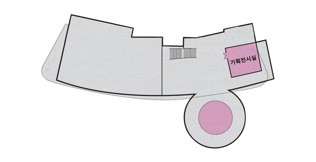
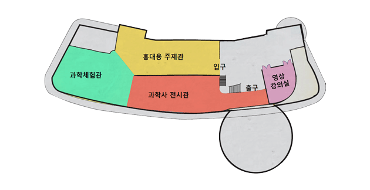
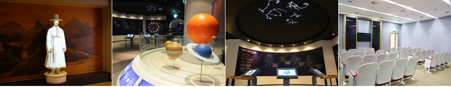
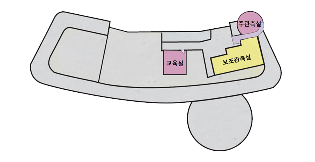
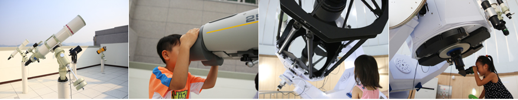

1층(달빛마당, 다목적강당, 천체투영관) 달빛마당(야외천문공원) 달빛마당에는 한국에서 가장 큰 앙부일구(오목해시계)와 혼상 등 조상들의 지혜가 담긴 5개의 천문의기들이 설치되어 있습니다. 천체투영관 천체투영관에서는 15m원형돔과 7채널 프로젝터를 이용하여 기상상황과 관계없이 언제라도 가상의 별자리나 재미있는 천문영상을 관람하실 수 있습니다.(99석) 다목적강당 다목적강당에는 140석이 준비되어 있으며, 다양한 행사를 위한 영상 및 음향시설이 준비되어 있습니다. 다목적강당은 일반인도 대관이 가능합니다. (관람안내-대관시설 요금안내 참조)
2층(기획전시실)  기획전시실 기획전시실은 단체나 개인이 다양한 주제로 특별전시회를 열수 있도록 마련된 공간입니다. 기획전시실은 일반인도 대관이 가능합니다.(관람안내-대관시설 요금안내 참조).
3층(홍대용주제관, 과학사전시관, 과학체험관, 영상강의실)   홍대용주제관 홍대용주제관은 홍대용선생의 일대기, 지인, 업적에 대하여 알아 볼 수 있는 공간입니다. 다양한 영상기법과 체험형 학습기구로 알기 쉽게 구성되어있습니다. 과학사전시관 과학사전시관은 고천문학부터 현대천문학에 이르는 재미있는 천문학의 이야기를 다채로운 표현기법과 장치들을 사용하여 쉽고 재미있게 이해할 수 있도록 구성하였습니다. 과학체험관 과학체험관은 우주에서 느낄 수 있는 “무중력”과 같은 유사환경을 만들어 재미있는 과학체험을 할 수 있는 공간입니다. 총 5개의 시설로 구성되어 있습니다.
4층(주관측실, 보조관측실)   주관측실 800mm 반사망원경을 이용하여 어두운 천체를 보다 자세하게 관측 할 수 있습니다. 보조관측실 280mm 반사굴절복합망원경, 150mm 굴절망원경 등 5대의 고정형 보조망원경이 설치되어 있습니다. 또한, 10대의 이동형 망원경으로 다양한 천체를 관측 할 수 있습니다. 교육실 관측전 사전교육, 세미나, 공작교실 등을 위한 공간입니다.